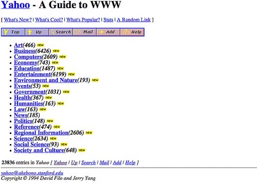

Introducing JavaScript
It's time to get acquainted with the main topic of this whole book: JavaScript!
A brief history of JavaScript
JavaScript is first and foremost the programming language of the web. It was invented in 1995 by Brendan Eich, who at the time worked for Netscape Communications, the company which created the first popular web browser by the same name.
Info
A web browser is the software you use to visit webpages and use web applications.
Warning
JavaScript should not be confused with Java, another programming language invented at the same time. Both share a similar syntax, but their use cases and design principles are very different.
The idea behind JavaScript was to create a simple language to make web pages dynamic and interactive. Back then, pages were very simple.

Web builders started gradually enriching their pages by adding JavaScript code. For this code to work, the recipient web browser (the software used to surf the web) had to be able to process JavaScript. This language has been progressively integrated into browsers, and now all browsers are able to handle it!
Because of the explosion of the Web and the advent of the web 2.0 (based on rich, interactive pages), JavaScript has become increasingly popular. Web browser designers have optimized the execution speed of JavaScript, which means it's now a very fast language.
This led to the emergence of the Node.js platform, which allows you to create JavaScript applications outside the browser. Thanks to a software called MongoDB, JavaScript has even entered the database world (software whose role is to store information).
Finally, the popularity of smartphones and tablets with different systems (iOS, Android, Windows Phone) has led to the emergence of so-called cross-platform development tools. They allow you to write a single mobile application that's compatible with these systems. These tools are almost always based on... JavaScript!
JavaScript: an essential language
In short, JavaScript is everywhere. It sits on top of a rich ecosystem of components (small software bricks that you can easily plug into your project) and a vibrant developer community. Knowing it will open the doors of the web browser-side programming (known as front-end development), server side development (back-end), and mobile development. A number of people see JavaScript as the most important technology in software development nowadays.
Both ubiquitous and still relatively easy to learn, JavaScript is also a good choice as a first language for learning programming.
Version used in this book
JavaScript was standardized in 1997 under the name ECMAScript. Since then, the language has undergone several rounds of improvements to fix some awkwardness and support new features.

In 2015, JavaScript versions began to be named by year. That year's release (ES2015, initially named ES6), introduced a lot of interesting novelties, many of them quickly adopted by the JavaScript developer community.
Moving away from big, infrequent releases, the JavaScript language since receives incremental updates on a yearly basis. New language features are gradually baked in JavaScript platforms through subsequent software updates. This is one of the reasons your web browser keeps updating itself!
This book targets the ES2016 language version. It is now well supported by most environments and platforms.
TL;DR
-
Originally created to animate web pages, the JavaScript language can now be used almost everywhere, from servers to mobile apps and connected devices.
-
JavaScript is becoming essential for many software developers. It is a good choice as a first language for learning programming.
-
It's been standardized under the name ECMAScript and is continuously improved ever since.
-
The JavaScript version used in this book is ES2016. It is well supported by most environments.